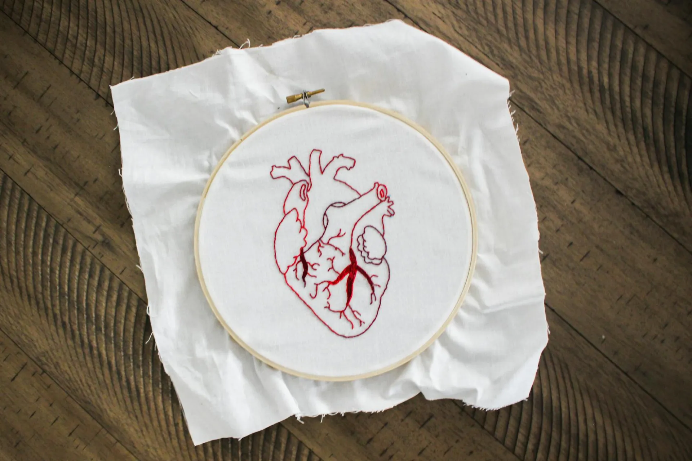

From Conversation to Creation
Every commission is a shared undertaking. We move at the pace of meaning, not the pace of production. Here is how a piece comes into being.

The Consultation
Every piece begins with listening. A commission at BRODERIE opens not with a design brief but with an unhurried conversation — conducted in person at the atelier, or via a private video consultation. We ask about the story behind the commission, its intended recipient, the emotions it should carry, and the space it will inhabit.
From this conversation, our lead artisan drafts an initial concept document: a narrative description of the proposed work, a colour palette drawn from our silk thread library, and an estimated timeline. This document is the contract of understanding between studio and client.

Design & Transfer
The approved design is drawn by hand at full scale on tracing paper. Our artisans work from botanical illustrations, archival reference materials, and the client's own photographs or heirlooms. No designs are digitally generated; every line is drawn with pencil by the hand that will later stitch it.
Transfer to the ground fabric is accomplished using the prick-and-pounce method — the oldest and most accurate technique, unchanged since the Renaissance workshops of Florence. The design is perforated with a fine needle, then pounced with charcoal or chalk dust through the perforations onto the stretched linen. The resulting dots are connected with a watercolour pencil that will eventually be concealed by thread.
The Stitching
With the design on the frame, the stitching begins. Depending on the commission, one or more of our master artisans will work the piece, always under the direction of the lead artisan. We stitch in natural daylight wherever possible; artificial light, however precise, distorts the perception of colour and texture in thread.
A small wall piece might require two hundred hours of stitching over six weeks. A large botanical study can take eight hundred hours across twelve months. The client receives progress photographs at each significant stage — never out of obligation, but because we believe the making is itself a gift worth witnessing.

Framing & Delivery
The completed embroidery is laced onto a conservation-grade stretcher bar, a technique that allows the textile to breathe and expand without damage over centuries. It is then framed under museum-grade UV-filtering glass in a frame selected in consultation with the client — from our archive of hand-gilded and ebonised options.
Every completed commission is accompanied by a signed Certificate of Provenance, a detailed materials record listing every thread colour, source, and dye lot, and a care guide for the next hundred years. The piece is packed in archival tissue and a custom crate for delivery by specialist art courier, insured to the replacement value of the commission.